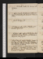
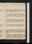
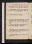
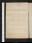
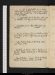

- About
- Diary
- People
- Events
- Reading
- Writing
- Meals
- Meetings
- Search

1802, Jan. 1. F.Write to Robson. Walk to Lombard Street, w. Ct; meet King: read 2 Shoes. meet B Montagu: call on miss Lamb: T P Smith (Philadelphia) calls n.
2. Sa.Translate 5 pages. M dines: Ht G calls: call on Fenwicks, w. Ct.
Jan. 3. Su.T. P Smith, Fellsna & Curran call: H G dines.
4. M.Call on Fuseli, C Smith (adv. C & Ht), Coleridgen, & Fenwicks (adv. Younger): Fenwicks at tea.
6. W.Dr Johnson calls: call on Philips, w. Ct: dine at H G's, w. do.
7. Th.Sw. Jervis calls: call on Philips (adv. Lindsay) & Fenwickn: theatre, 1/4 Artaxerxes, & Petruchio; adv. J Taylore.
8. F.Call on Fenwick: write to Philips. Curran, Fuseli, Perry, Carlisle, T Moore, Fell & H G dine: invités Sheridan, H Tooke, Coleridge, Wolcot, Reynolds, Nicholson & C Smith.
9. Sa.Call, w. Curran, on Wolcot, Fenwick, & mrs Billingtonna: meet Hussey & Tierney: L Wycombe at Curran's: dine at T Moore's, w. Curran, Woolriche & Carpenter.
Jan. 10. Su.Lambs call: call on Fell, w. Lambs & Ct.
11. M.Wood, çala. Miss Nicholsons call: call on Jo G: Cole & 3 Hodges'scdine: theatre, C G, Revenge; adv. Brogden (& Jervis)e.
12. Tu.Wood, çala. Call on Wolcotn & S Elwes: E Fenwick calls: theatre, w. Cts, L, F & M, Folly as It Flies, & Harlequin's Almanacke.
13. W.Write to Coleridge. Curran calls: dine at Wycombe's, w. Curran, Martin of Galway, Knox, Ball, Lawrence & Webb.
14. Th.Write to Philips. Fenwick calls: tea Fenwick's, w. Barthelemis, Plumptres, Fells & Ct.
15. F.Call on Ct Northcote, w. Ct & F; adv. Bourgeois & Hoare: theatre, Alfonso; adv. C Kemble, Fillingham, Lawrence, Northcote (& Castlereagh)e.
16. Sa.Call on Ritson & C Smith; adv. miss Barker: Curran & Bennet call n: meet Curran, Bennet & Jennings: theatre, Henry IVe. call on Currann: meet T Knight & R Johnson.
Jan. 17. Su.Jewish History, 2 1/2 pages. Fell calls: call on Fenwick, w. Ct: dine at King's, w. Danvers's, Plowdens, Prices, St Georges & Derville.
18. M.Jewish History, 1/2 page. Call on Heath, Sharpe & Carlisle: dine at Plowden's. Wood calls.
19. Tu.Write to Ht. Jewish History.
20. W.Jewish History. Call on Wycomben: mrs Perry & Hoare call n: theatre, w Ct, H G, miss Forsyth & Fenwicks: Fenwicks sup; Chains of the Hearte.
21. Th.Chains of the Heart. W Stewart calls: M dines: call on Reynoldsn & Nicholson.
22. F.E & H Gilchrist dine: theatre, 7/10 Regent, & Mania; adv. Plowdens, Reynolds, Morton,O'Brien, Hill (& Mr Decamp)e.
23. Sa.Write to E Goodford. Tea Lamb's, w. Ct, M, Fells & Alves.

Jan. 24. Su.Jewish History. Tea Nicholson's, w. Ct, Carlisles, Davy, 43 Combes, mrs Graham & B Plumptre.
25. M.Jewish History. Call on Coleridge; adv. T Poole: dine at Fell's, w. Ct, Lambs & M.
26. Tu.Jewish History. Call on C Smith, w. Coleridge: theatre, Venice Preserved, w. Ct & Coleridge; adv. (Mackintosh,) Sharpe, B Allen & Elmslye: sup at Coleridge's, w. Ct, Poole, Elmsly, & Purkis.
27. W.Jewish History. Call on A Plowden, & Philipsn: dine at Johnson's, w. Fuseli, Bonnycastle, Nancride, 3 Simmons's, Irving & Edgworth: meet J Taylor. adv. Mullet.
28. Th.Jewish History. Call on Heathn & E Reynolds: meet Hoare & Fillingham.
29. F.Jewish History. Call on Fenwickn.
30. Sa.Jewish History. Call on Ja Wt: Coleridge, Poole, Davy, Northcote, Lamb, Fell & C Smith dine: invités Southey, Johnson & Hoare.
No. XI.the Ground Rents of the following houses expire in about 14 or 15 years: they are paid to the Goldsmith's Company, perhaps renewable, the sooner the better Prim[r?]ose Street 11 houses No, 11 to 21 inclusive Rents commence from Mar. 25, 1803 Receiver Roger Eaton, No. 23, Birchin Lane, opposite Royal Exchange to be divided between Edward John Wollstonecraft Eliza Bishop Everina Wollstonecraft James Wollstonecraft Charles Wollstonecraft Mary Wollstonecraft Godwin Mr Eaton recommended by Mr Johnson, bookseller, No. 72, St Paul's Church Yard Rents from £30 to 24£ per annum per house
Jan. 31. Su.Life of Grossetête, p. 36. Ryley, Tobin, Plowden & fille , Erving & Lewis Cs call: call on Day: Jo G at tea: sup at Reynolds's, w. H & G Siddons.
Feb. 1. M.Grossetête, p. 118. Masters calls: call on Philips; &, w. M J, on Fell & Fenwickn.
2. Tu.Grossetête, p. 222. Reynolds's & Heath call n: Jas Wt dines.
3. W.Charles & Marie, pp. 155: Nature & Art, Vol. I. Dine at M's, w. M J, Fells, Lambs, Jas Wt, C, F & M.
4. Th.John Woodvil: Nature & Art, Vol. II. Call on mrs Perry, w. M J.
5. F.Posth Works, Vol. III. Call on Robinson & Philips: theatre, Heigho for a Husband; adv. J Taylore.
6. Sa.Jewish History, 3 pages. Write to Philips. Theatre, Mourning Bride; adv. Battye.
Feb. 7. Su.Jewish History. H G, Wood & Nicholsons call: Jas Wt dines; adv. Philips's, Fells & Lambs.
8. M.Osorio, acts 1, 2, 3. Coleridge calls.
9. Tu.Write to mrs Harwood. Osorio, acts 4 & 5. Theatre, Cabinet; adv. Hoare, Hill & J Taylorf e.
10. W.Beauty & Beast. R Taylor calls: call on Heath; &, w. S E, on Kedden & Picoux: tea Coleridge's, w. Tuffen & Poole; invités Lawrence, R Sharpe, Southey & Davy. Write to Philips.
11. Th.Jewish History. Call on Coleridge; adv. Poole: tea C Smith's; adv. C, H & George.
12. F.George Smith & Fawcet call: Jas Wt dines. theatre, w. J W & M J, Fair Penitent; adv. Tuffen, R Sharpe & Boddingtone. Write to A G.
13. Sa.Jewish History. Fawcet calls.
Feb. 14. Su.Jewish History. Southey, Tobin & Jas Wtn call: dine at King's, w. Lathorp, Derval, Fowden, Fitzgerald & Stacy.
16. Tu.Jewish History, 1 1/2 pages. Coleridge calls: Coleridge, H G & Jas Wt dine.
17. W.Chaucer, 1 1/2 pages: Jewish History, 1/2 page, fin. Call on Fenwick. Noble Gentleman, act 1.
18. Th.Chaucer, 2 pages. Call on Northcote; &, w. M J, on Fenwicks: Fawcet calls n.
19. F.Noble Gentleman, acts 2, 3, 4: Father & Daughter, pp. 206. Fawcet calls: miss Forsyth dines.
20. Sa.Jewish History. Noble Gentleman, act 5. Jas Wt dines; adv. Fenwicks.
Feb. 21. Su.Jewish History. Sup, w. M J, at Fell's. Dr Moore dies
22. M.Chaucer, 15 lines. Jewish History. Call on Philips: Fuseli's Lecture; adv. Opie, Northcote, Banks & J Taylore.
23. Tu.Jewish History. Carlisle calls.
24. W.Call, on w. M J, on Reynolds's (adv. Wroughton), Fuseli & Coleridge: miss Fth dines.
25. Th.Jewish History. Theatre, D L, Rosella, act 2e.
26. F.Chaucer, 1 1/2 pages. Call on C Smith & Southey; adv. mrs Losh: meet Hill: theatre, C G, Henry IV; adv. J Taylor & Pyee. Dr Geddes dies
27. Sa.Chaucer, p. 32. Call, w. J M J, on Jo G: Jas Wt dines: theatre, Double Dealer; adv. Hill & J Taylore.
Feb. 28. Su.Dine at H Tooke's, w. John Pearson, H White & Humphries.
Mar. 1. M.Write to Ht. Call on Perry, D Stuart, Lauderdale (adv. P. of W., Lord R Spencer & R Adair), mrs Reynolds & Nicholson: meet W Webb.
2. Tu.Chaucer, p. 34/2. Write to Cole & Montfort. Call on Northmoren, Coleridgenit (adv. D Stuart) & Northcote (adv. Fawcet): meet Kemble: theatre, w. M J, Lover's Resolutionse. Duke of Bedford dies .
3. W.Burke v. Bedford, p. 52. Call on Robinson, Philips, Lambn & J G: dine at Johnson's, w. Fuseli, Bonnycastle, Edgworth & Garver.
4. Th.Jewish History. Burke, p. 80, fin. Call on Joyce; adv. Belsham & Jervis: miss F dines, & Jas Wt.
5. F.Chaucer, revise. Perrys, Fenwicks & miss Lunan at tea: invités Reynolds's & Nicholsons.
6. Sa.Wood calls: call on Philips: E Fenwick calls: Jas Wt at tea: Lamb sups.
Mar. 7. Su.Jewish History. J Hollis, Carlisles, Fell & J J G call: dine at Perry's, w. M J, Tho. Campbel, Spanky, Ramsay, 3 Bonnors, & Gillies's, & miss Stuart: Phscalls [n]
8. M.Meet Hardy: call on Johnson & Philips; adv. Joyce & Gregory: Fuseli's Lecture; adv. Opie, Lawrence, Shee, Porter, Hoare, J Taylor, & Burrel, & Bankse.
9. Tu.Chaucer, revise. Jas Wt dines: meet M J at Nicholson's: meet Keir.
10. W.Chaucer, revise. Jas Wt & M dine: theatre, w. M, Messiah, 1 acte.
11. Th.Chaucer, revise. Le Grand, p. 24. E Reynolds calls.
12. F.Le Grand, p. 60. Tobin calls: call, w. M J, on Fenwicks.
13. Sa.Chaucer, p. 43, 44, 45. Le Grand, p. 117.
Mar. 14. Su.Chaucer, p. 47. Call on Hilln, Ervingn, Davy & Nicholson: Campbel & Wood call n: sup at Reynolds's, w. Northcote, Hoare, C Moore & C Kemble: meet Bosville: Fells & M sup n.
15. M.Le Grand, Vol. II, p. 50. Write to Poole. Call, w. M J, on Carlisles, & C Smithn: AlldisAnnis calls: Fuseli's Lecture; adv. Opie, Northcote, Hoare, Banks, Campbel, & H Scott, Northmore & Malthuse.
16. Tu.Le Grand, p. 114: Warton & Petrarque, çala. Call on Goldsmith (w. McAdam) & Nicholson: Jno Holcroft calls.
17. W.DuDe la Rue, pp. 60. Smith & Malthus call: M dines: Fenwicks sup.
18. Th.Chaucer, p. 49/2. Smith dines: call on Carlisle.
19. F.Chaucer, p. 50. Sign w. Goldsmith & McAdame.
20. Sa.Chaucer, p. 51/2. Romaunt, 410. Call on Cosway, &, w. M J, on Fenwicks; adv. Lambs.
Mar. 21. Su.Romaunt, 2418. Dine at King's, w. Prescot, Ling & Plowdens 5; adv. Lathorp, Davis & abbé
22. M.Romaunt, 4900. King, &c, call: M dines: Fuseli's Lecture; adv. Northcote, Hoare, & Bankse: theatre, Mock Doctor, w. Hoaree.
23. Tu.Romaunt, 5696. Wood, Smith & King call: Davy's Lecture; adv. Underwood & Burrele; sup at Davy's, w. Tobin, Pinney senr, Henry & Thomson.
24. W.Romaunt, 7698, fin. M J at White'se.
25. Th.Percy, &c. Call on Campbel P Hn: theatre, Winter's Tale; adv. Fillingham & Bourgeoise.
26. F.Percy, çala. Joyces call: M dines; agreement for Kriméee. Write to C Mountcashel.
27. Sa.Chaucer, 1 page. Carlisle calls: Lambs & Fenwicks at tea. Peace of Amiense.
Mar. 27. 28. Su.Chaucer, 1/2 page. H G calls: Smith dines.
29. M.Chaucer, 2 pages. Meet M J at Nicholson's.
30. Tu.Chaucer, 1/2 page. Boileau, çala. Call on mrs Henley, Watling Street: sup at Hollis's.
31. W.Write to Murphy, Burdet, C Smith, Philips & Johnson. Fyshe Palmer's Narrative, pp. 79. M dines: Oratorio, w. him & M Je.
31. Apr. 1. Th.M W Montague's Letters, 260, fin. Congé of Cooper & Marguerite.
Apr. 2. F.Court of Love, 710. Call, w. Fenwick, at Burder's, Brook Street.
3. Sa.Court of Love, 1443, fin. Sealy & Smith call: call on C Smith, Downman, L Knapp & C Smith.
Apr. 4. Su.Chaucer, p. 51/2-54. Court of Love, 504. Meet Plowdens & Reynolds: dine at King's, w. Plowden, Wolcot, Lathorpe, Prescot, & mrs St George; adv. mrs Campbel & mrs Penny Kenyon dies
5. M.Chaucer, p. 58/2. Court of Love, 1022. Call on Johnson: M & miss Forsyth dine: theatre, Country Girl, & Brazen Maske. meet Este
6. Tu.Chaucer, p. 61/2. Court of Love, 1443, fin. Miss Plowdens call: meet Ritson: call on Hilln & Southeyn.
7. W.Chaucer, p. 63/2 & 1/2 page. Smith & M dine: call, w. Smith, on Nicholson & Northcote: Oratorio, w. M J, Smith, M & S Fell, D L, Marae.
8. Th.Petrarque, çala. Write to Murphy & Hoare. Call on Philips, & w. him on Nichols: call on Polidori. meet Tho Campbel & Sharp eng.
9. F.Chaucer, 2 pages. Crescimbeni, çala. Call on Felln & Fenwick; adv. Lambs.
10. Sa.Petrarque, Tom. I; II, p. 143. Annis calls.
Apr. 11. Su.Chaucer, 3 pages. Petrarque, p. 220. Cole calls: call on Burdetn: sup at Reynolds's, w. C Kemble: Fells sup n.
12. M.Chaucer, p. 66/2. Petrarque, p. 324. Call on Philips (adv. Prevôt), Damianin & Polidorin: Smith calls n: call on T C Rickman; adv. Price & Moore.
13. Tu.Chaucer, p. 68/2. Petrarque, p. 495. Damiani calls.
14. W.Troilus, B. I. Petrarque, Tom. III, p. 202. Meet Damiani: dine at Johnson's, w. Fuseli, Bonnycastle, Hollis & Edgworth.
15. Th.Troilus, B. II, 931. Call, w. Polidori, on Deocheda: sup at Reynolds's, w. M J & C Moore.
16. F.Chaucer, p. 69. Troilus, B. 1757. Tobin calls: M dines: sup at Fell's, w. M J, Smith & M.
17. Sa.Troilus, B. III, 940: 1/2 Ethwald, I. Hollis, Southey & Brown call: meet Hill, at M's: call on Ritson.
Apr. 18. Su.Chaucer, 1/2 page. Troilus, 1826: Petrarque, p. 302. Fenwick & Wood call: call, // w. M J, on Hoaren, Perrysn & mrs Plowden: Anderson at tea. meet B Montague Darwin dies.
19. M.Write to Geo. King. Petrarque, p. 625. J G dines: call on Polidorin & mrs Christie.
20. Tu.Write to Ht & Geo. King. Chaucer, p. 72. Petrarque, p.750. Molini calls. Earl of Guildford dies
21. W.Write to C Smith. Petrarque, p. 6 811, fin. Call on Polidorin, Wilbraham, Nicholsonn, Philips, Taylor, Foulkesn & M: Day dines: meet Joyce.
22. Th.Chaucer, p. 74. A Mills, Smith, Tho Campbel & Rickmans call: theatre, Fashionable Friends, w. M J; adv. Philips's & Surrse.
23. F.Chaucer, p. 76/2, & 1/2 page. Call at Nicholson's, w. M J.
24. Sa.Troilus, B. IV, 742: Philostrato, p. 22. Dyer & Shepherd call: theatre, Man of ye Worlde.
Apr. 25. Su.Jewish History, revise. Troilus, 1078. Smith & H G call.
26. M.Troilus, 1701: filostrato, P. VI, 160. Smith & M dine: call, w. M J, on Lambn.
27. Tu.Troilus, B. V. Call on Rickman.
28. W.Chaucer, p. 80. Call, w. M J, on Ritson: sup at Lamb's, w. M J & Fells; adv. Stoddart.
29. Th.Warton & Tyrwhit, çala. Meet A Barbld: Proclamation of Peace, &, w. M J & children, illuminationse.
30. F.Call on Davyn: meet Webb: Ritson, Campbel & Wood dine.
May 1. Sa.Chaucer, 2 pages. Northmore & son call: Smith dines: theatre, West Indian, & Virgin Unmasked, w. Smithe.
May 2. Su.Jewish History, revise. Call on Wilks & Fillingham: meet Smart.
3. M.Exhibition; Opies, Batty, Sharp, Heath, Boaden, Este, J Taylor, Perry, Webb, Shee, Foote, Philips fishmonger, Annis & Felle: M dines; adv. Smith: call on Nicholson £83.
4. Tu.Lydgate, Troy-Book, çala. Smart & Hollis call: Exhibition w. M Je: call, w. M J, on Plowdenn.
5. W.Chaucer, p. 81. Marg. Jones calls.
6. Th.Chaucer, p. 83. Fiévée calls: call, w. M J, on Battyn & Northcote: Smart tea & sups.
7. F.Chaucer, p. 86. G M Cooper calls: Fiévées, Theodore, Lambs, Fells & Fenwicks at tea; Marg. Jones dines.
8. Sa.Chaucer, p. 89. Call, w. J M J, on Duncan (adv. Carlisle) & Ritson: sup at Fell's, w. Lambs, Fenwicks & M. Casualty chez Felle.
May 9. Su.Call on Porsonn; &, w. M J, on M, J G & Philipsn: J G, H G & Marg. Jones dine.
10. M.Chaucer, p. 90. Fiévée & Theodore call: dine at Northcotes (sit): Northcote sups.
11. Tu.Chaucer, p. 93. Call on O Fancourt: M dines; adv. Smart.
12. W.Chaucer, p. 96. Sit to Northcote; adv. W Hazlit: Smart calls, w. Esther: meet Kemble: Hazlit sups & sleeps.
13. Th.Smart calls: dine at Philips's, w. M J, Fell, Bradleys, Busbys & Reid; & adv. Surrs.
14. F.Chaucer, p. 99/2. Smith, Mills & Wood call: M & Hazlit dine.
15. Sa.Chaucer, p. 101. Emetic e. Mrs Carlisle & B Plumptre call n.
May 16. Su.Chaucer, p. 104. Wilks calls: call on Carlislen & Reynoldsn.
17. M.Hazlit's adieue: Smith calls: call, w. M J, Fiévée & Theodore , on Northcote & Exhibitione: dine at Fiévée's, w. M J & Theodore. meet Smirke.
18. Tu.Goverus, &c. Hazlit calls (readse): M dines: call, w. M J, on Felln & Fenwicks.
19. W.Chaucer, p. 106. Annis calls n: theatre, w. M J, Winter's Tale; adv. Plowdens.e
20. Th.Chaucer, p. 109/2. Smart & Marg. Jones call: mrs Cummins & Ad. Fiévée dine.
21. F.Chaucer, p. 113. Write to Ht. Annis calls.
22. Sa.Chaucer, p. 115. Call on Philips £100 (adv. Woodfal) & Keir n.
May 23. Su.Chaucer, p. 116. Breakfasts sup at Lamb's. Jewish History, 3 pages. adv. Burnet.
24. M.Chaucer, 1/2 page. Call on R Taylor & Mills:. Smart calls.
25. Tu.Chaucer, p. 119. Call on J Robinson & Philips; adv. M: M dines. G Fordyce dies
26. W.Chaucer, p. 120. Call on mrs Dunbar: meet Philips: dine at Johnson's (illo absente), w. Fuseli, Bonnycastle, Damiani & Dr Woodhouse.
27. Th.Chaucer, 1/2 page. Meet Fell, Hatton Garden: E Fenwick calls: E Reynolds at tea. Send to Carlisle.
28. F.Jewish History, 4 pages. Write to Ht. Send to Combe. Smith calls.
29. Sa.Chaucer, p. 123/2: Jewish History, 1 page.
May 30. Su.Chaucer, p. 123: Jewish History, 6 pages. Fenwicks sup; adv. M.
31. M.Chaucer, p. 124. Smith dines: Combe calls[ n ?] theatre, 1/2 Love in Villagee: meet Barbaulds.
June 1. Tu.Chaucer, p. 128: Jewish History, 2 pages.
2. W.Chaucer, p. 133. Carlisle calls.
3. Th.Chaucer, 2 pages. S Fell calls.
4. F.William I, 1/2 after 11 .Call on G Robinson & Johnson: fetch Mary Janee: M dines.
5. Sa.Chaucer, 1 1/2 pages. Write to Poole & W L White. Lambs sup; adv. Nicholsons.
June 6. Su.Chaucer, p. 134. H G, Marg. Jones & E Fenwick call.
7. M.Chaucer, p. 135. Meet Wolcot: Lambs & 3 Smiths dine; adv. F Dunbar: Combe calls.
8. Tu.Write to Ht. Mills & Carlisles call.
10. Th.Chaucer's Dream; 1/2 Book of Duchess. Miss Smith calls: H G & Marg. Jones call.
11. F.Book of Duchess, fin. M Lamb, S Fell & Tobin call: Combe & Phebe G at tea.
12. Sa.Chaucer, p. 138. Call on Philips: meet Lanesborough, S M , E B D, & W Tooke : Nicholsons call: E & E Fenwicks at tea.
June 13. Su.Chaucer, p. 145/2. Carlisles & Bell Plumptre call: call on Felln & Reynoldsn: sup at Nicholson's.
14. M.Call on Northcote. Rhumee.
15. Tu.Chaucer, p. 147. Mills & G M Cooper call.
16. W.Chaucer, p. 151. Call on R Taylor; adv. J Taylor & B Montagu: meet Fuseli: Marg. Jones calls: meet Lawrence, S T.
17. Th.Call on Burder, & D Stuartn: meet Robinsons, Combe, Gregory (& A Barbauld): sup, w. M J, at Fell's.
18. F.Chaucer's Dream, v. 700. Smith dines: call on Carlislen: tea, w. M J & Smith, at Nicholson's, Camden Town: adv. Molini.
19. Sa.Chaucer's Dream, v. 1300. Write to C Smith. Call on Philipsn.
June 20. Su.E Christie calls n: dine at H Tooke's, w. H Gawler, J Pearson, Tooke, Bazeley junr, Moody & Nutton junr; Northcote sups.
21. M.Call on White, F T C, incog n.
22. Tu.Chaucer, p. 153/2. C's Dream, v. 13 2233, fin: Pensées de Voltaire, p. 100. Miss Smith & L Hobby dine.
23. W.Chaucer, p. 156/2. Call on Robinson's (contract for Voltaire, £31.10) & Jo Gn: dine at Johnson's, w. H Tooke, Fuseli, Aikin senr, Mullet & capt. Hunter (vignettes).
24. Th.Chaucer, p. 158. E Christie dines; adv. A Fiévée & anonyme.
25. F.Chaucer, p. 159/2, & 1/2 page. Carlisles call: tea Geo. Dyer's, w. Shepherd & Cristal: sup at Lamb's, w. Fenwicks, Fells & White. Write to A Harwood.
26. Sa.Chaucer, 1 page. Westminster Abbey, &c, w. M J. (meet Burdet.): E Fenwick calls, ppc.
June 27. Su.Chaucer, 2 pages. Jo G at tea: call on Reynoldsnit.
28. M.Chaucer, revise. Call on E Christien: theatre, Haymarket, 1/5 Lover's Vows; adv. Hill & Fillinghame: Fiévée, Theodore, Hoaren & Cooken call. Write to Robinsons, on Golberry. Parliament proroguede
29. Tu.Chaucer, revise. Smith calls: H G & miss Forsyth sup. Parliament dissolvede
30. W.Davison calls: sup at Jo G's, w. West, J G, H G & M J; adv. J J G.
July 1. Th.Write to A Harwood. Call on Philips, adv. Surr; &, w. them, on Opie & Northcote.
2. F.Abr. of Park, p. 50. Call on Robinsons (contract for Golberry, £1.1.- per sheete): dine at Philips's, adv. Dupré: call, w. Philips, on Ritson, Miller, Archer, Harding & Tassaert.
July 4. Su.Chaucer, revise. Charpentier & Braham of Boston call: Lambs & Fenwick at tea; adv. M.
5. M.Chaucer, revise. Write to M, & Smart. Park, p. 60. Davison calls: call on Hill's books.
6. Tu.Chaucer, revise. Write to Lamb. Park, p. 126. Annis & Lamb call.
7. W.Chaucer, revise. Fenwick calls: call on Philips; adv. Davison.
8. Th.Voltaire, revise. Hustings, C G, w. M J; adv. Felle: Rickman calls.
9. F.Chaucer, revise. Park, p. 160. Smith calls. Write to Ht.
10. Sa.Chaucer, 2 pages. Park, p. 210. Call on abbé Carron; w. M J: meet Lawrence: theatre, Beggar My Neighbour; adv. Colombine, Morris & Stevensone.
July 11. Su.Fenwick & Ritson call: Smarth, Smith & M dine.
13. Tu.Park, p. 384. Hustings, C Ge.
14. W.Chaucer, p. 160. Mrs Napier dines; adv. J Napier & mrs Pagan: call, w. M J, on Fells; adv. Lambs.
15. Th.Chaucer, p. 163/2. Call on Philipsn: meet Joyce.
16. F.Chaucer, 9 lines. Park, p. 498. Call on Philips (adv. Damiani), Davison, & Hill; adv. Du Bois.
17. Sa.Chaucer, p. 165/2. Meet Ritson. Write to Philips.
July 18. Su.Romaunt, 1070. Fenwick & J G call: Smith sups.
19. M.Romaunt, 2260. Write to Philips. Sup at Nicholson's, w. M J, Foulkes, Raphael Smiths, & Haywoods, & miss Stodart.
20. Tu.Romaunt, 3609. Smith, son, & Fenwick dine.
21. W.Romaunt, 4460. Russel grammarian calls: dine at Johnson's, w. Edwards & Newnum. Write to Philips. Carlisles & B Plumtre call n.
22. Th.Romaunt, 5952. Call on Edwards, Pall Mall.
23. F.Romaunt, 7698, fin. Sup at Lamb's, w. M J & Stoddart.
24. Sa.Chaucer, p. 168. Call on Edwards P M; adv. Dutens: theatre, 2/3 Battle of Hexham, & Sixty Third Letter; adv. Danvers's, Lanesboro & Mariscottie.
26. M.Chaucer, p. 172. Sup at Carlisle's, w. M J & Jas Barry. meet Rickmans, w. M J.
27. Tu.Chaucer, p. 174/2. Lambs, Stoddart, 5 Nicholsons & Fells at tea. call on Boaden.
28. W.Chaucer, p. 176/2. Cave, çala. Call on Fell.
29. Th.Wood, Hist., çala. Voltaire, revise. Joyce calls. Middlesex Election endse.
30. F.Call, w. M J, on Hoare: meet Plowden
31. Sa.Mosheim, çala. Lambs at tea: theatre, w. M J & M Lamb; adv. R K Porter & J G Jones; Voice of Naturee.
Aug. 1. Su.Malone, Warton, &c. Call on Hillnit & Ritson: Jo G calls: call, w. M J, on Northcoten & E Pickering.
2. M.Romaunt, &c. Me Beccaria, Joyces & Smiths at tea.
3. Tu.Chaucer, p. 179. Meet Wilson reporter, w. M J.
4. W.Chaucer, p. 184. Call on Philips (adv. Henley); &, w. Philips, on Townsend, H C (adv. chev. Lawrence): Lamb, Smith, H G & miss Forsyth sup.
5. Th.Roman de la Rose, 13106 to 14154. Call, w. M J, on Callagan & Me Beccaria: Carlisles & B Plumptre at tea.
6. F.Chaucer, p. 187/2. Roman, 15328. Meet S E.
7. Sa.Chaucer, p. 191. Smith, Pisani & J Beccaria at tea; adv. Northcote.
Aug. 8. Su.Warton, Hawkins, &c. Napiers dine: call on Fillinghamn: sup at Philips's, w. Surrs & mrs Griffiths.
9. M.Percy, çala. Call on J Beccarian: Astley's, 1/2 Female Hussare. Ingersol calls, & messenger from Warburton, schoolmaster.
10. Tu.Chaucer, 1 1/2 pages. Voltaire, revise. Call on Gray & Plantan: Ingersol dines.
11. W.Chaucer, 1 1/2 pages. British Museume: call, w. M J, on E Bonen; sup at Fell's.
12. Th.Chaucer, 5 pages. Call on Smithn.
13. F.Chaucer, 4 pages. British Museum; adv. Ritsone.
14. Sa.Chaucer, 4 pages. Phebe G dines; adv. H G & miss Forsyth: call, w. M J, on Smithers.
Aug. 15. Su.Chaucer, 1 1/2 pages. Leslie, Smart & Fenwick call: sup at Fillingham, w. Hill & Dubois.
16. M.Chaucer, 1 page. Call on Townsend, w. Philips, adv. Macquin: meet Johnson, Bonnycastle, Johnson jr & Hollis.
17. Tu.Chaucer, 2 pages. Call on Surr: sup at H G's, w. Jo G, wife & 2 filles , Waring, Littlewood & Forsyth. indenture of P Ge.
18. W.Chaucer, 2 pages. Call on Sharp engraver: sup, w. M J, at Fell's.
19. Th.Chaucer, 2 pages. Write to M, Liverpool: M dines.
20. F.Strutt, çala. Call on Perryn: theatre, Sixty Third Letter, & Fairy Revels; adv. Lewise.
21. Sa.Strutt, çala. Fells sup: F Dunbar calls.
Aug. 22. Su.Napiers dine; adv. J Gn: dine at H Tooke's, w. Burdet, H Gawler, Gunter Brown, Tooke, Bazely & Rogers cordonnier: Fk sups
23. M.Chaucer, 1/2 page. Strutt, çala. G M Cooper, Jo G & Smart call: M at tea.
24. Tu.Chaucer, 2 pages. Call on mrs Dunbar: meet Stoddart. Write to Ht.
25. W.Call on Jo G (adv. J G & J J G) & Tiffin: dine at Johnson's, w. Fuseli, Paterson, Bonnycastle, Edwards, Dyson, Johnson jr & Newnum: call on Philips.
27. F.Chaucer, 3 pages. Call on Davisonn, M G & Tiffin: M dines. Write to Ht, Davison & J J G.
28. Sa.Chaucer, revise. Call on Northcote: Astley's, w. M J, F, M, C & J, Victims of Tyranny, &ce.
30. M.Chaucer, revise. Call on Davisonn: Jo G calls: Fenwick dines; adv. H G, miss Forsyth, J Beccaria & Smith.
31. Tu. Chaucer, 2 pages. Call, w. M J, at Norton's, Fell sups. Mrs Mackenzie calls: write to Johnson, on Walker .
Sep. 1. W.Chaucer, 1 page. Strutt, çalà. Call on Davison & Fenwick; adv. Fell: Keir calls n.
2. Th.Chaucer, 1 page. Call on J Beccaria & Reynoldsn: Keir, Clarke & Fenwick call: call, w. M J & Fk, at Fell's; adv. Kennedy.
3. F.Chaucer, 1/2 page. Northcote sups: Newton calls.
Sep. 5. Su.Chaucer, 1 page. Revise Golberry. Smart calls: Smith dines; adv. Daw.
6. M.Strutt, St Palaye, &c. Revise Golberry. Call on Buck & Reynolds.
7. Tu.Edw. Johnson of Mile-End calls: tea Joyce's, w. M J. Rheumatisme.
8. W.Golberry, revise. Captif de Valence, p. 149.
9. Th.Golberry, revise. Call on Towers: Sadler's Wells, w. F, M, M J, C & J; Zoa & Wizard's Wake{.}eLamb calls n.
10. F.Stow, çala. Call on Davisonn: meet Hill & H White: call, w. M J, at Fell's; adv. Kennedy
11. Sa.Chaucer, 1 page. Notes on Hollinshed. J G at tea.
Sep. 12. Su.Leland, çala. Smart calls: Lambs at tea; adv. Fenwick.
13. M.Life, 2 pages. M dines: call on Smart.
14. Tu.Chaise, w. M J: breakfast at Cranford Bridge: dine at Maidenhead: sup at Reading ; call at Havel's.[Not in London]
15. W. Breakfast at Speen Hill, Newbury: call on Winter, James, Cotton & Combe: see Donington Castle: drive towards High Clere. Dr Harvey calls n.[Not in London]
16. Th.Isley: breakfast at Hurwel: dine at Wallingford, Castle & Bridge: Ewelm, overturne: sup at Henley. Hts & Nicholsons call n.[Not in London]
17. F.S Breakfast at Salt Hill: Richmond Hill & Park: call on H Tooken: dine at Perry's, w. mrs Wheatley: sleep at Wimbledon. Curran calls n.[Not in London]
18. Sa. Breakfast at Perry's, w. mrs Wheatley: dine at H Tooke's; adv. H Gawler & sir F. Burdet: sleep at Somers Town. Curran calls n.[Not in London]
Sep. 19. Su.Call, w. M J, on Currann, Hilln, Hts, Northcote, Dawe, E Reynolds, Nicholson & Carlislen: Ht dines. Curran calls three times n.
20. M.M Paris, çala. Curran calls: call on Robinsons, Philipsnit & Boaden: theatre, w. Boaden, 1/5 Romeo; adv. Morton & J Taylore.
21. Tu.Naples, çala. Call on Jas Smith: Curran, Boaden & Hts dine. (Parachute.) Write to Robinsons. meet Roberts.
22. W.St Palaye, çala. Call, w. Curran, on Reynoldsn, Barry & Ht.
23. Th.Chaucer, revise. Dawe calls.
24. F.Chaucer, 1 page & revise. British Museum, Hollinshede: M G & M Bailey at tea: sup at Lamb's. Carlisles call n.
25. Sa.Chaucer, 1 1/2 pages. Call on Northcote; adv. Dawe: H G & miss Forsyth dine; adv. Napier & miss Walsh. meet Plowden. W Tooke dies
Sep. 26. Su.Chaucer, 1 1/2 pages. Jo G & Smart call: call on J Bannistern: meet Reynolds: dine at Ht's, w. M & Smith.
27. M.Call on Red Crossn, Philipsn, Banks, Ht & Flaxman: Fanny Ht dines: theatre, 7/10 Hamlete.
28. Tu.Golberry, revise. Ht calls: dine at Davy's, w. Rickman & Tobins: theatre, 1/2 Two Stringse.
29. W.Golberry, revise. Write to Tho. Wedgwood. Miss Walsh dines; Napier adv.: Lambs sup.
Oct. 1. F.Andrews, Warton, &c. M dines.
2. Sa.Gothic Architecture, p. 102. Write to T W. Call, w. M J, on Northcote & Lamb: Smith sups.
Oct. 3. Su.Chaucer, 2 pages. Smith, Graham & Smart call: Fells sup; adv. J G.
4. M.Proofs. Call on I Reed: theatres, 1/10 Hamlet & 1/10 Liare.
5. Tu.Chaucer, 1 page. Invités à diner, H Tooke, Northcote, Smirke, Lawrence, Batty & Nicholson. sup at Ht's, w. M J.
6. W.Chaucer, 1 page. M J & F dine at H G's.
7. Th.Chaucer, 6 pages. Tobin & map-engraver call: theatre, 2/5 Henry IV & 1/2 Fortune's Frolic; adv. Reynolds's & O Briene.
8. F.Museum, Grose; adv. Grahame: call on Davyn & Comben.
9. Sa.Golberry, revise. Tea Combe's.
Oct. 10. Su.King on Castles, p. 74. Smart & Philips'sn call: dine at Ht's. Hazlit calls n.
11. M.King, p. 148. Hazlit calls: M dines.
12. Tu.Chaucer, 1 1/2 pages. King, p. 184, fin. Museum, Grosee. Call on Harwoodn & Philips (Strutt): dine at Tobin's, w. Ht & Davy: theatre, 1/6 Cabinet, w. Hte: meet Damiani & Johnson.
13. W.Chaucer, 3 1/2 pages. E & M Harwood dine.
14. Th.Chaucer, 2 pages. Meet, w. M J, Este & R Johnson: Hazlit dines: theatre, 1/2 Merry Wivese: Dawe sups.
15. F.Chaucer, 2 pages. Museum, Joinvillee: meet Polidori: call on Northcote.
16. Sa.Henry, çala. Museum ne: Ht calls: mrs Cummins dines; adv. Ht.
Oct. 17. Su.Chaucer, 1 page. Smart calls: H G, Forsyth & Hansard dine; adv. Smith.
18. M.Write to Robinsons. Museum, Montfaucon; adv. Agare: theatre, w. M J & F, Ric. III; adv. Htse.
19. Tu.Chaucer, 1/2 page. Write to Douce, nomine Philips.
20. W.Chaucer, 2 pages. S Nicholson & M dinesn: dine at Johnson's, w. Fuseli, Davy, Malthus, Bonnycastle, Edwards & Dilly.
21. Th.Chaucer, revise. Museum, Warburton, &ce: call on Carlisle: sup at Nicholson's, w. Dickinson
22. F.Golberry, revise. Pienne, p. 102.
23. Sa.Chaucer, 2 pages. Pienne, p. 212. M J calls on doe.) M dines; adv. Ht.
Oct. 24. Su.Chaucer, 5 lines. Golberry, revise. Meet S Nicholson & E Scott: Philips & Surr call.
25. M.Chaucer, 2 pages. Curran dines: sup, w. him, at E Dixon's. M J at Symonds's, Cadel's, Ridgway's & Hookham's.
26. Tu.Wimbledon, w. Curran; call on Burdet; dine at H Tooke's, w. Burdet.
27. W.M dines: theatre, 1/2 Man of the World; adv. Hte.
28. Th.Chaucer, 1 page; revise. Theatre, Brothers & Midas, w. M J & C; adv. Fells & Lambse.
29. F.Chaucer, 1 page. Carlisle calls: theatre, 7/10 Jealous Wife; adv. Batty, Este & J Taylore. Calonne dies .
30. Sa.Chaucer, 1 1/2 pages. Carlisle calls: theatre, w. M, Delays & Blunders; adv. Morris, E Inchbald & mrs Kemblee.
Oct. 31. Su.Chaucer, 1 1/2 pages. Carlisle & Combe call: call on Carlisle: Lambs sup.
Nov. 1. M.Chaucer, 1/2 page. Burney, p. 210. Lamb & Carlisle// call: Keir at tea.
2. Tu.Chaucer, 2 pages. Burney, p. 307. Carlisle calls, Combe & Fenwick: theatre, 3/10 Merry Wives; adv. Morton & Reynoldse.
3. W.Arnot, Carlisle & Wakes call: M dines. Call on Ht, am.
4. Th.Chaucer, 1 1/2 pages; revise. Fell & M dine{.} Carlisle calls, am.
5. F.Chaucer, revise. Carlisle calls. Dine at rev. Wake's, Portland Street; adv. Careless.
6. Sa.Chaucer, revise. Carlisle calls: M dines: theatre, 2/5 Delays & Blunderse.

Nov. 7. Su.Chaucer, revise. Carlisle, Smith & Smart call: dine at Foulkes, w. 3 Smiths, 3 Hts, 3 Nicholsons, Wolcot, Cole, &miss Haines, & mrs Ackermann.
8. M.Museum; Montfaucon, Eginhart, &c; adv Agare: Wakes & Walker call n: dine at Fell's, w. Dignum & M. Coleridge in town.
9. Tu.Museum; Osbern, &c; Ayscought's Memde. Call on Smith, Newman Street (adv. Dr. Gower) & Smirke.
10. W.CRymer, &c. Combe calls: go, w. him, to ye Antiq. Society : call on Richards, 5, Brownlow Street.
11. Th.Chaucer, 1/2 page. Arnot calls: call on Westal: dine at R Smith's, w. Hts, Nicholsons, Wolcot & M J; adv. Warnes, &miss Bagnal & gen. Watson.
12. F.Call on Flaxman, & Philips: Museum; Olaus Wormius, &c; adv. Ritsone: Comben & Arnot 2 calls: call, w. M J, on Philips, & Lambn.
13. Sa.Chaucer, 2 pages; revise. Theatre, w. M J & Fells, Delays & Blunders, & Tale of Mystery; adv. Reynolds's, B Allen & mrs Mackintoshe.

Nov. 14. Su.Golberry, revise. Combe calls: Arnot, Ht & Smiths dine; adv. Lamb. Nicholsons call.
15. M.Museum, Bulæus, &c; adv. chev. Lawrence Wilsone: call on Sharp & J T Smith: Tobin calls n: Arnot at tea.
16. Tu.Chaucer, revise. Call on Collier, eng.: sup at Ht's.
17. W.Chaucer, revise. Call on Philips, w. M J: theatre, House to be Sold; adv. Majore.
18. Th.Chaucer, revise. Call on Burney: Arnot at tea; adv. M.
19. F.Museum, Tanner & Bulæuse. Call on Buck & Wolcotn: Wakes, Arnot, Graham & M dine.
20. Sa.Chaucer, Introduction, 2 pages.
Nov. 21. Su.Ht, Smith & mrs Napier call. Chaucer, Introd., p. 6. Dine at Ht's, w. M J; adv. Charlotte Mercier.
22. M.Chaucer, Introd. p. 8. Call on Ritson: M dines: theatre, Way to Keep Hime.
23. Tu.Chaucer, revise. Buchan calls: call on Bucn. Parliament openede.
24. W.Chaucer, revise. Combe calls: call on J T Smith & Stoddartn: meet Perry & M Lamb: dine at Johnson's, w. Fuseli, Bonnycastle, Erving & Sharpe Rd.
25. Th.Chaucer, revise. Museum, Cantacuzenus, &c; adv. Dyere: meet J Bannister: call on Buckn, Northcote & Condén: Fells sup.
26. F.Chaucer, revise. Museum, G & M Villani; adv. Wilsone: call on Bosvillen, Northcote & Condén: meet C Kemble: Buchann & Arnot call: Arnot at tea; adv. M.
27. Sa.Chaucer, revise. Arnot calls: M dines; adv. Taylor & Condé: theatre, 3/10 Richard; adv. Hill & Fillinghame: sup at Hollis.
Nov. 28. Su.Chaucer, 2 1/2 pages. Jo G & Smart call.
29. M.Chaucer, 3 pages. Dine at Ht's, w. Harwoods, col. Barry, Foulkes, M & M J: Arnot calls n.
30. Tu.Chaucer, 2 1/2 pages. Call on Bosville, w. Arnot: sup at Fell's, w. Arnot & M J.
Dec. 1. W.Museum, Reeves ne: call on Ritson, Butterworth, M Lamb & Mrs Plowden: Carlislen & Arnot call: meet Wake.
2. Th.Chaucer, 1 page. Call on Northcote: Arnot calls.
3. F.Chaucer, 2 1/2 pages. Theatre, 3/10 Castle Spectre, & Sultan, w. M J; adv. Bazeleye.
4. Sa.Chaucer, 1 page. Call on Philips & Townsend: M dines: sup at Lamb's, w. M J & Stoddart.
Dec. 5. Su.Chaucer, 1 page; revise. Hts & M dine.
6. M.Chaucer, 4 pages. Mrs Cummins calls: theatre, 3/10 Macbeth, & 1/2 Tale of Mysterye.
7. Tu.Chaucer, 2 1/2 pages. Museum, fre: call on R Smith: theatre, Winter's Tale, act 4e.
8. W.Chaucer, 2 pages. Museum, Gen. Deorum; adv. Damianie: M dines: theatre, Busy Body, acts 3, 4 & 5e.
9. Th.Notes for Chaucer. Davis from Virginia calls.
10. F.Chaucer, revise. Museum, Bale of Pits; adv. Planta, Ellis, Dyer & Wilsone: call on Northcote, Arnotn, & Condé: M dines: theatre, w. M J & M, Every Man in his Humour, & the Pannele.
11. Sa.Chaucer, 2 pages. Call on Condé.
Dec. 12. Su.Chaucer, 1 page; revise. Ht, Smart, Blanford, Smith & Fenwick call; dine at Stoddarts; adv. Tobin: meet M J & M at Ht's.
13. M.Chaucer, 1 page. Museum, Bale & Pitse: call on Ritson: meet S E: Nicholson's call.
14. Tu.Chaucer, 1 page. Notes on the Lawyer. M. dines.
15. W.Chaucer, 1 page; revise. Museum; Dugdale & Madoxe: call on Carlislena & Arnotn.
16. Th.Memoires de Du Guesclin, p. 82-168, & Barnes.
17. F.Chaucer, 1 1/2 pages. Condé at tea: call on Davison, & Philips; adv. Surrs.
18. Sa.Chaucer, p. 196 (3 1/2).Wakes call: call on Collyer, w. M J: M dines: theatre, Family Quarrels; adv. C Kemblee. Ht calls.
20. M.Chaucer, p. 201. Austin calls na: call on Austin & Gaugain: dine at Northcote's: call, w. him, on Ogbourne.
21. Tu.Wicliff, &c. Call on Davisonn: Lambs & M dine; adv. Smith.
22. W.Wicliff, &c. Ebworth & miss Thomas's, & Smart call.
23. Th.Barnes, çala. Call on Davison: theatre, w. M J, M & M, Children in the Wood, & Child of Naturee.
24. F.Chaucer, p. 205/2. Ja Wt dines: Fells sup.
Dec. 26. // Su.Chaucer, 1 page; revise. Carlisles call: Jas Wt, Charlotte Mercier & F Ht dine; adv. Ht. Write to Booth of Forfar.
27. M.Book of the Duchess: Fiévée's Letters, p. 106.
28. Tu.Chaucer, p. 212/2. Combe, Mrs Napier, Miss Green & J J Godwin call: M dines: call, w. him on Jo G.
29. W.Chaucer, p. 216. Dine at Johnson's, w. Fuseli, Bonnycastles, Davy, Tobin & Mawman; adv. Hewlet.
30. Th.Chaucer, 2 pages. Northmore & Burdon call: theatre, Catoe.
31. F.Chaucer, 1 page; revise. Austin calls: theatre, Love & Magice.
Contact --  -- Cookies/Privacy
-- Cookies/Privacy